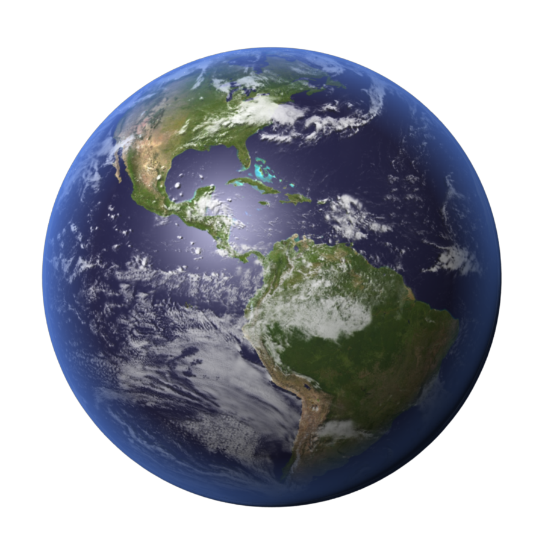
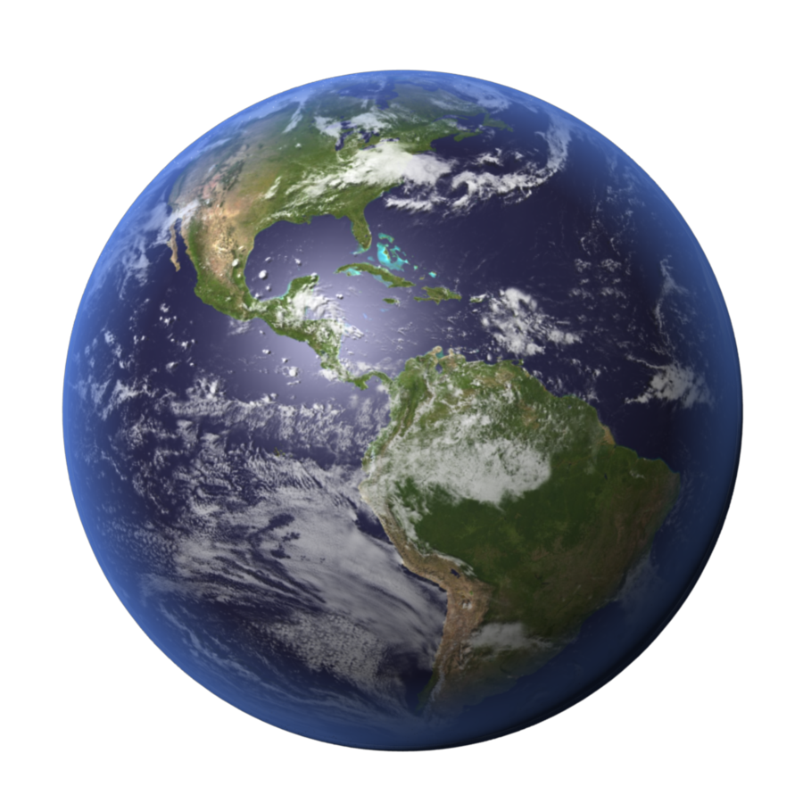
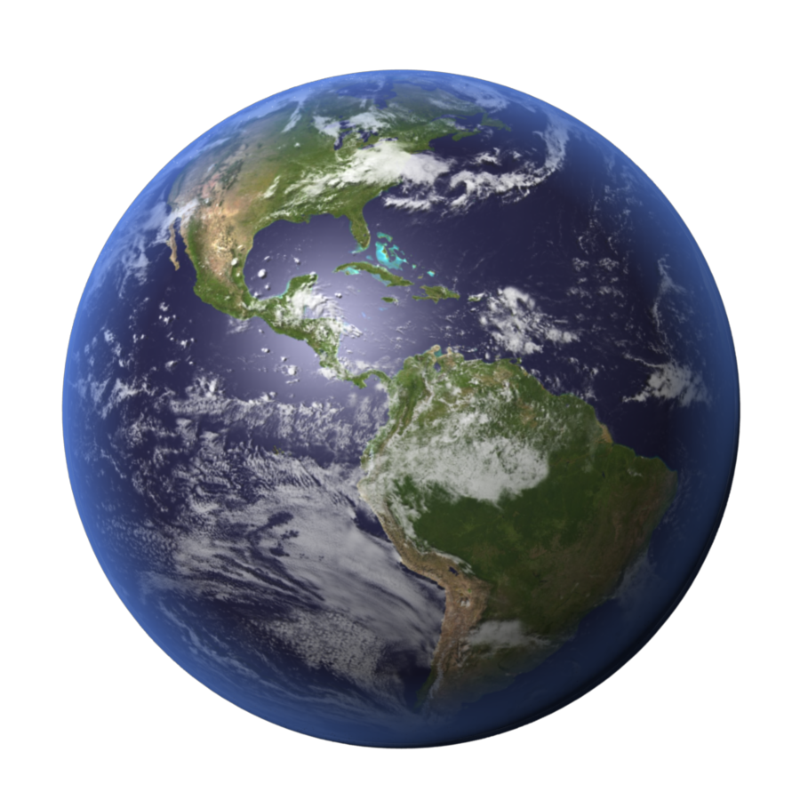

What they Look Like

 


Because of the distance, and our current technology sometimes the images we have of other planets have to digitally modified.
Terrestrial planets are Earth-like planets (in Latin, terra means Earth) made up of rocks or metals with a hard surface — making them different from other planets that lack a solid surface. Terrestrial planets also have a molten heavy metal core, few moons, and topological features such as valleys, volcanoes and craters.
| Properties | Mercury | Venus | Earth | Mars |
|---|---|---|---|---|
| Mass (kg) | 3.3 x 1023 | 4.87 x 1024 | 5.98 x 1024 | 6.42 x 1023 |
| Diameter (km) | 4879.4 | 12104 | 12756 | 6787 |
| Mean density (kg/m3) | 5420 | 5250 | 5520 | 3940 |
| Escape velocity (m/s) | 4300 | 10400 | 11200 | 5000 |
| Average distance from Sun | 0.387 AU | 0.723 AU | 1 AU | 1.524 AU |
| Rotation period (length of day in Earth days) | 58.65 | 243.02 (retrograde) | 1 (23.93 hours) | 1.026 |
| Revolution period (length of year in Earth days) | 87.97 | 224.7 | 365.26 | 686.98 |

Because of the distance, and our current technology sometimes the images we have of other planets have to digitally modified.